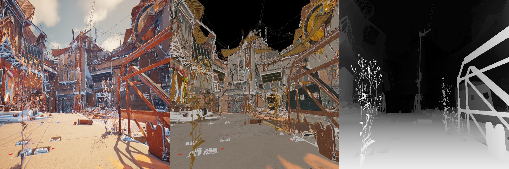
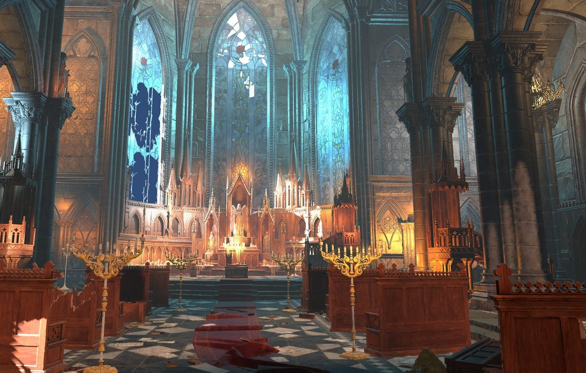
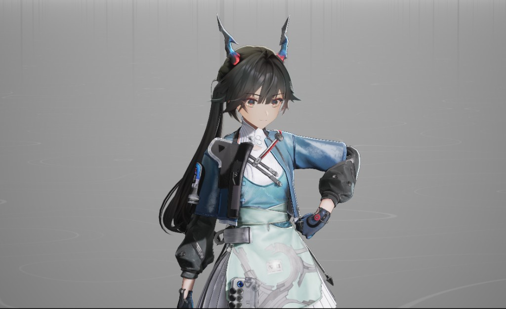

实时渲染
关注阴影、PRT、屏幕空间光线追踪、PBR 与降噪之间的工程平衡，让高质量画面实时落地。
Technical Artist · Rendering · Shader
我是陈诺，关注游戏技术美术、实时渲染、Shader 编写与渲染工程实现。
Live — Raymarched SDF Step Heatmap × Shadow · AO · Depth · 移动鼠标改变主光方向
(01) Selected Work
六个主项目，从神经网络打光与实时全局光照，到底层渲染、风格化角色表现与游戏系统实现。

在 UE5 中从画面反推可编辑的真实灯光：数据采集、全局光网络训练、独立验收与无偏离线渲染器。

在 Unity URP Deferred 上重构的实时 GI 管线：屏幕空间先行，距离场兜底，缓存复用辐射，时域稳定画面。

不用图形 API，从 OBJ 读取到光栅化、深度测试、纹理采样与 Blinn-Phong 着色的 CPU 渲染器。

NPR 与 PBR 混合的角色材质、法线偏移描边、SDF 面部阴影与头发阴影控制。
从 Shadow Map、PRT、屏幕空间实时光追，到 PBR 多重散射和时空降噪的 GAMES202 渲染专题整理。

把音乐节奏判定、动作战斗和 Roguelike 强化机制结合的 3D 俯视角游戏 Demo。
(02) About
我关心画面是如何被计算出来的。从阴影、全局光照与材质，到 Shader 与渲染管线， 我拆解视觉目标、建立技术路径，把参数、调试与表现统一进一个可迭代的流程里。
关注阴影、PRT、屏幕空间光线追踪、PBR 与降噪之间的工程平衡，让高质量画面实时落地。
从节点到代码实现风格化效果，沉淀可复用的参数控制和调试方法。
通过 CPU 渲染器和图形学基础验证，把抽象管线落实到具体代码路径。
把战斗节奏、视觉特效和系统事件连接起来，让反馈服务于手感与策略。
(03) Method
先明确画面风格、角色识别度、反馈强度和性能边界。
把目标拆成光照、材质、管线、事件和工具参数。
用可解释的代码和可调参数快速迭代，保留调试输出。
最终用画面稳定性、交互反馈和可维护性检验方案。